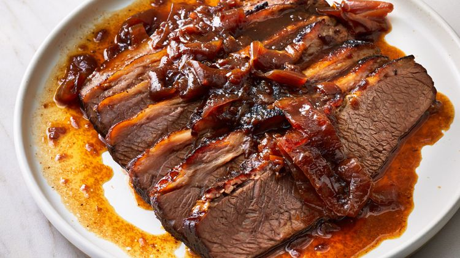

Chef John's Perfect Prime Rib

What is this recipe?
This recipe describes a methodical, beginner-friendly method for cooking tasty, delicious brisket.
This brisket will elevate your Hanukkah season to the next level.
Ingredients
- 4 pound beef brisket
- 1 large, diced onion
- 2(14.5 oz) cans of beef broth
- 2(15 oz) cans French onion soup
- 2(12 fl oz) cans/bottles of beer
Steps
- Preheat oven to 350 F
- Use a large roasting pan on medium-high heat to sear the brisket (fat-side down) until browned. About 3 min per side
- Place onion slices into the bottom of the same roasting pan; pour 1 can beef broth, 1 can French onion soup, and 1 can beer over onions. Lay brisket on top; pour remaining beef broth, French onion soup, and beer over brisket. Cover the roasting pan with a lid.
- Bake in the preheated oven for 3 hours. Let brisket stand at room temperature for 30 minutes.
- Remove brisket from the roasting pan and wrap tightly in aluminum foil. Pour pan juices and onion into a food storage container and cover tightly with a lid. Refrigerate brisket and pan juices, 8 hours to overnight.
- The next day, preheat the oven to 350 degrees F (175 degrees C). Pour pan juices and onion into a 9x13-inch baking dish.
- Unwrap brisket, cut away any visible fat, and slice thinly across the grain of the meat. Place brisket slices into pan juices.
- Bake in the preheated oven until pan juices are thickened and meat is hot, about 45 minutes.